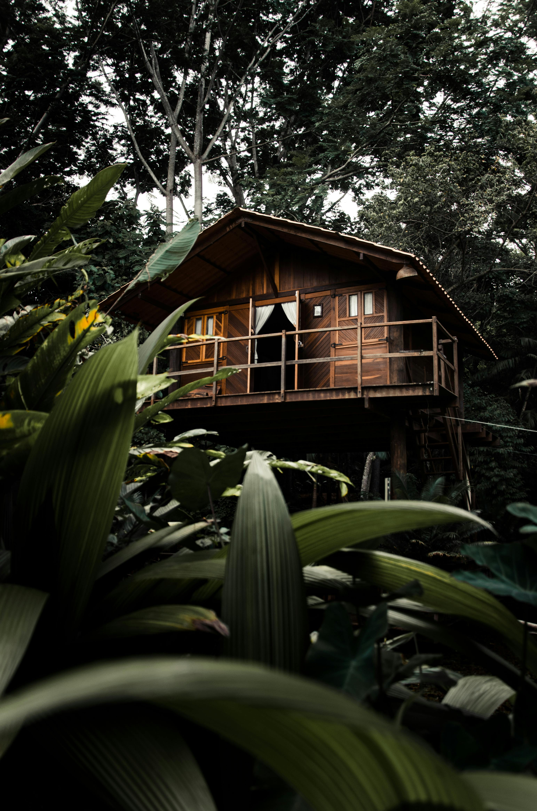
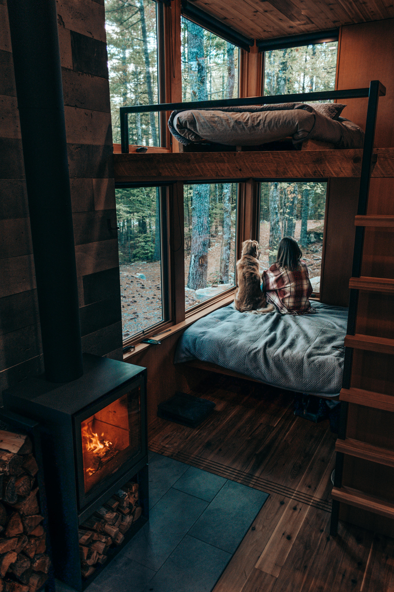
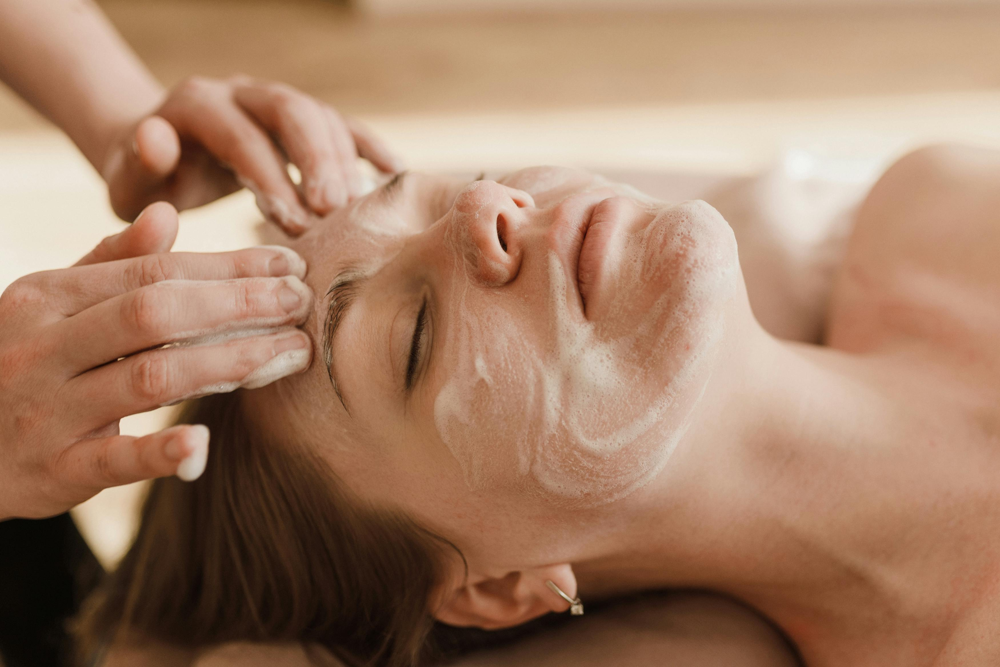
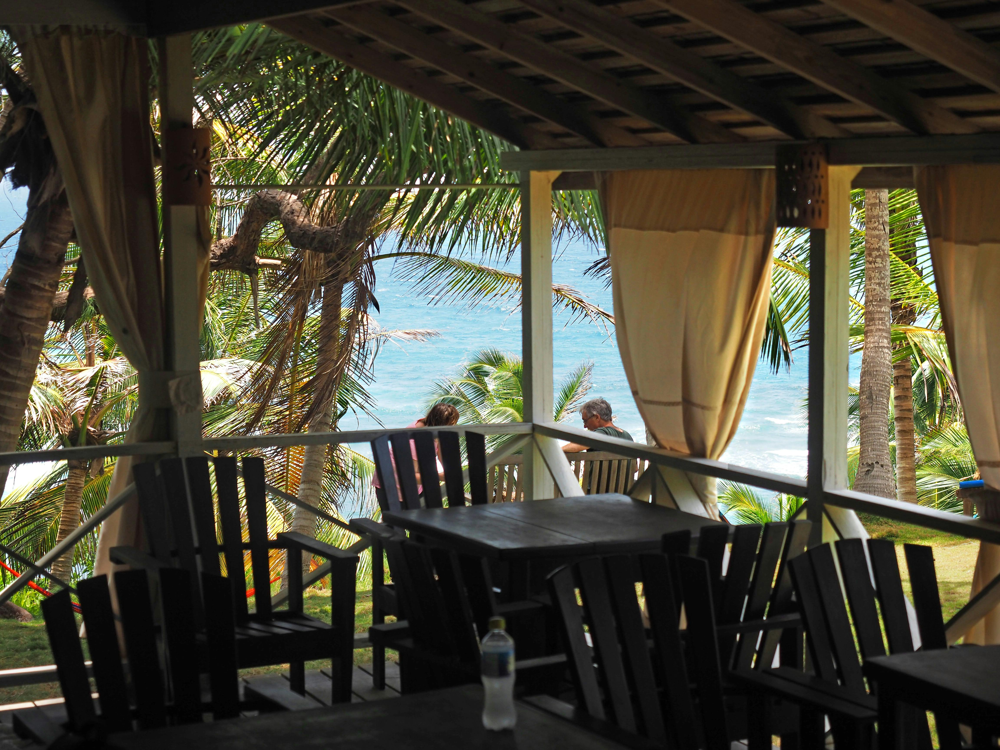
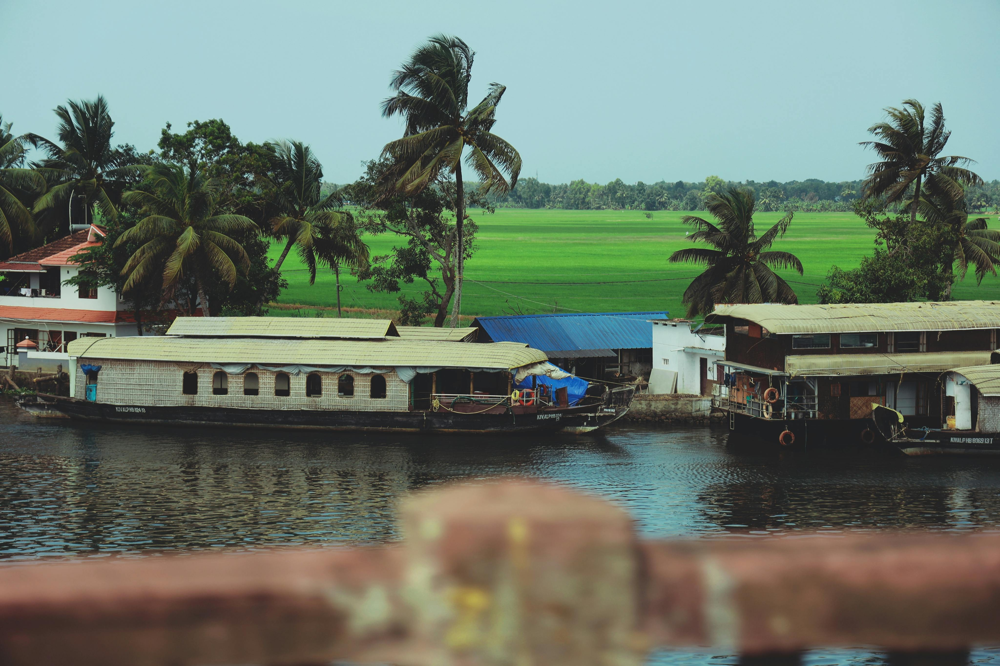
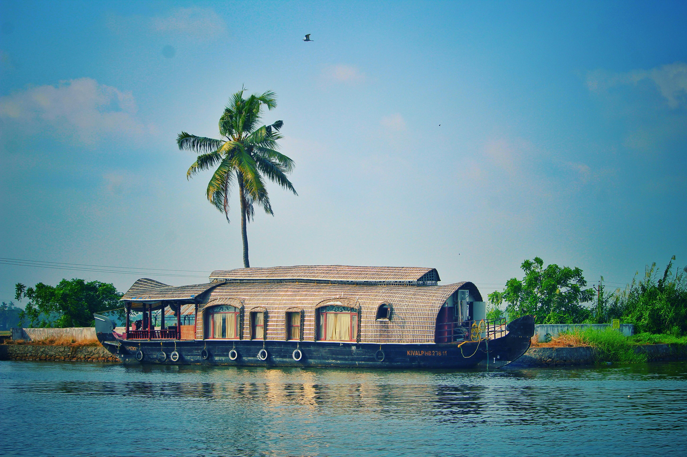
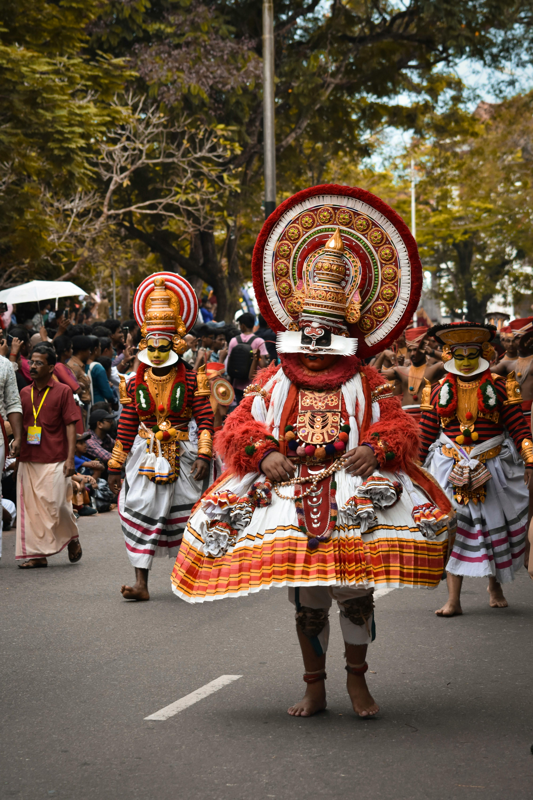

Hotel History
The Storied Legacy of Hotel Royal Cliff
Founded in the illustrious year of 1923, Hotel Royal Cliff stands as a testament to timeless elegance and a beacon of refined luxury. Over the course of nearly a century, it has not only borne witness to the unfolding of history but has also played host to some of the world’s most illustrious figures in entertainment, politics, and culture. In its early years, the hotel exuded an old-world charm that captivated travelers from near and far. In the 1950s, with an eye toward sophistication and modernity, the hotel underwent magnificent renovations, breathing new life into its grand lobby and opulent guest rooms. These enhancements ushered in a new era, blending classic elegance with contemporary luxury. By the 1980s, the hotel had become a gathering place for the most powerful and influential leaders of the world, who chose Royal Cliff as their sanctuary during historic events of global significance. As the turn of the millennium approached, the hotel embarked on an exciting new chapter, seamlessly marrying state-of-the-art amenities with the timeless charm that had always defined it. In doing so, it honored its storied past while providing guests with unparalleled comfort and service, ensuring that the experience of staying at Hotel Royal Cliff would always feel like stepping into both history and modern-day luxury. Today, it remains a revered institution, a place where the past and present dance in harmony, offering a retreat for those who seek both the splendor of history and the pleasures of contemporary indulgence.








Historical Milestones:
- 1923: The hotel was founded.
- 1950s: Renovations to the lobby and guest rooms.
- 1980s: Hosted world leaders during major events.
- 2000s: Introduced modern amenities while keeping historical charm.